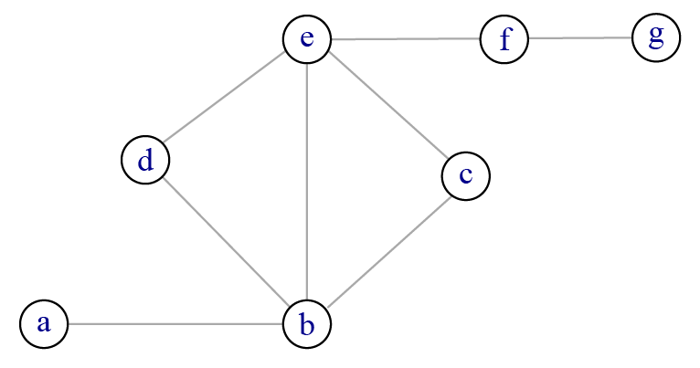
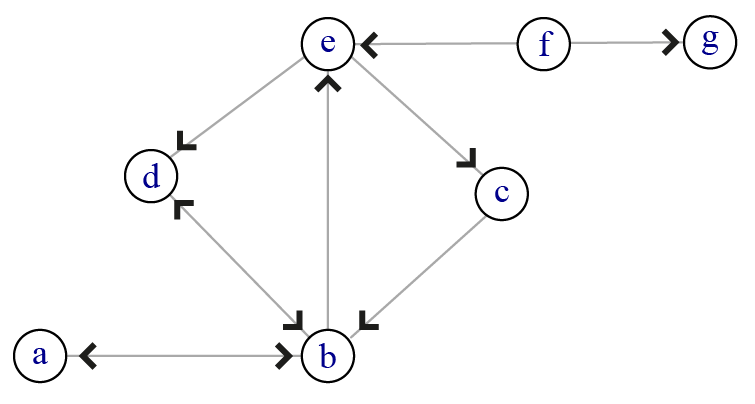
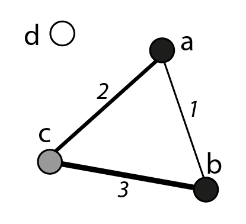

4 Construire ses données
Mener à bien une analyse de réseau suppose de construire ses données relationnelles afin d’obtenir un ensemble de sommets et un ensemble de liens symbolisant une relation entre ces sommets. Définir ces deux ensembles est l’une des tâches essentielles : que représentent mes sommets ? que représentent mes liens ? Passer du temps pour répondre aussi précisément que possible à ces deux questions est indispensable pour tenter d’obtenir des résultats intéressants.
4.1 Construire l’objet
Les données relationnelles que vous choisissez d’analyser ont deux origines possibles : vous les avez construites, vous les avez récupérées et dans ce cas d’autres que vous les ont construites. Le terme construction est essentiel : il n’existe nul part dans le monde social, y compris le monde social numérique, des objets qui pourraient être considérées comme des données qu’il suffirait de “récolter” puis de “nettoyer” 1 avant de les analyser.
Quel que soit le soin avec lequel vous récoltez et mettez en forme vos données relationnelles, il est important de garder à l’esprit qu’un réseau est un modèle de la réalité, une version simplifiée et incomplète d’un type donné de relations entre certaines entités. Un réseau n’existe pas en soi et ce quelle que soit sa nature. Ceci est vrai des réseaux personnels des individus mais c’est également vrai pour des réseaux type infrastructures de transport. Tout recueil et mise en forme de données supposent des choix plus ou moins arbitraires, des décisions plus ou moins bien informées.
Exemple 1 : je m’intéresse aux relations sur Twitter. Ma première étape est de définir ma population et de justifier ses limites : pourquoi ces comptes et pas d’autres ? La deuxième étage est de définir ce que j’appelle une relation sur twitter : un abonnement réciproque (\(v_1\) est abonnée à \(v_2\) et \(v_2\) est abonnée à \(v_1\)) ? le fait de retwitter ce que poste un compte ? le fait de répondre à un tweet ? le fait de nommer l’utilisatrice du compte dans les tweets ? Il n’existe pas une solution, il en existe des dizaines et toutes peuvent avoir leur pertinence en fonction des questions que je me pose.
Exemple 2 : soit le réseau ferroviaire en Île-de-France que je souhaite modéliser sous forme de réseau planaire. Quelles lignes dois-je prendre en compte ? Si je prends le Francilien, il serait peut-être utile de considérer aussi les lignes RER. Est-ce que j’inclus les correspondances entre les gares parisiennes et si oui, lesquelles (RER, métro) ? Est-ce que je prends en compte les travaux et l’inaccessibilité temporaire de certaines stations ? Est-ce que je cherche à prendre en compte la fréquence des dessertes et pas la seule présence d’une gare sur le plan ?
À l’intention des formatrices
Il est relativement facile de montrer le caractère construit des données relationnelles, y compris avec des données qui paraissent aussi intangibles qu’un réseau ferré, autoroutier ou viaire. Imprimer un extrait de plan OpenStreetMap et demander à trois groupes de tracer le réseau viaire (en donnant un minimum de règles simples et une question de recherche générale) correspondant à ce plan, vous obtiendrez sans aucun doute des résultats différents. L’objectif n’est pas de conclure qu’on peut faire ce qu’on veut et que dans tous les cas on triche mais au contraire d’insister sur la nécessité de documenter les choix effectués.
Les lignes qui suivent sont triviales et s’appliquent à toute démarche de recherche, qu’elle se prétende qualitative, quantitative ou mixte. Si je m’amuse à récolter des données, c’est pour répondre à des questions. Lorsque ces données sont relationnelles, cela suppose que je suis capable de délimiter la population que j’étudie et que je suis capable de définir la ou les relations entre les individus de cette population - je le répète une dernière fois, population et individus sont entendus au sens statistique, ce peut être des villes, des plantes, des personnes, des journaux, etc. etc. Plus les critères utilisés, tant pour délimiter la population que pour définir la ou les relations, sont précis et plus vous serez capable d’interpréter les résultats obtenus. Inversement, récupérer un corpus dont on ne sait pas trop comment il a été construit est un bon moyen de perdre son temps.
4.1.1 Réseau complet vs réseau personnel
En ce qui concerne le recueil des données, deux grandes approches d’analyse de réseau existent : l’approche par réseau complet et l’approche par réseau personnel (ego-network, personal network 2). Dans le premier cas, je délimite une population et je cherche à recueillir un ou plusieurs types de relations existant à l’intérieur de cette population. L’une des difficultés principales consiste à s’assurer de la congruence entre ses questions de recherche et ce que m’apportera une analyse en réseau complet. Il faudra également anticiper les fluctuations possibles dans la composition du groupe.
Exemple : je m’intéresse aux relations amicales chez les jeunes enfants et je prends pour terrain d’étude les relations au sein d’une classe de CP. Il n’est pas du tout certain que les données que je récolte soient pertinentes : je suppose plus ou moins implicitement que les enfants nouent leur amitié à l’école et dans leur classe. Il faudra a minima que je pose des questions sur leurs meilleures amies pour vérifier si c’est le cas et dans quelles proportions. Si par contre, je travaille sur les dynamiques de groupe au sein d’une classe, le dispositif est sans doute plus directement utile.
La collection des données par réseau personnel vise à collecter l’ensemble des liens d’un groupe d’individus choisis pour une raison donnée. Si je reprends l’exemple de la salle de classe, je ne cherche pas à déterminer les relations entre les élèves de cette classe mais les relations que chaque élève (ego) entretient avec ses amies, ses voisines, sa famille, etc (alters). Dans la mesure du possible, je cherche également à déterminer si les relations de l’individu se connaissent entre elles, ce qui est parfois difficile à déterminer. En effet, il est rarement possible d’interroger les egos puis l’ensemble des alters cités. Les liens entre alters sont donc ceux qui sont connus, identifiés par les egos. Ceci n’est pas un problème dans la mesure où ce qui importe est bien la façon dont ego voit son entourage et non les relations “réelles” au sein de ce dernier.
Avec la démarche par réseau complet, j’obtiens un réseau des relations entre les \(V\) individus du groupe étudié ; avec la démarche en réseau personnel, j’obtiens \(V\) réseaux personnels en forme d’étoile centrés sur les différents individus enquêtés.
Exemple : la sociologue Claire Bidart réalise en 1995 la première vague d’enquête dite du panel de Caen (Bidart et al. (2011) ; carnet de recherche Panel de Caen). Elle interroge trois groupes d’élèves (terminales SES, bac pro et stage d’insertion) sur leurs relations amicales, amoureuses, professionnelles, associatives, etc. Une distinction est faite entre liens faibles (liens occasionnels ou se déroulant dans un seul contexte) et liens forts (liens existant dans plusieurs contextes ou considérés comme importants par la personne 3).
4.1.2 Générer des noms : questionnaires et entretiens
Lorsque l’on souhaite étudier des liens interpersonnels, quatre dispositifs de recueil de données au moins sont possibles :
- l’utilisation de questionnaire ;
- la passation d’entretien ;
- l’examen de traces, numériques ou non, laissées par les personnes ;
- l’observation.
La première étape, quelle que soit l’option retenue, est d’aller voir ce qui a déjà été fait, non pour le répéter mais pour s’en inspirer. Il n’est évidemment pas utile de tout lire mais piocher dans de vieux articles de sociométrie, des thèses 4 récentes et d’autres moins récentes, des carnets de recherche, etc. permet d’avoir une vision large de ce qu’il est possible de faire.
Il existe de nombreux manuels sur ces questions (chercher “méthodes qualitatives en … en remplaçant … par votre discipline et les références devraient apparaître) et il n’est pas question pour moi ici de les plagier. Il s’agit simplement ici d’attirer l’attention sur des obstacles récurrents et des scrupules tout aussi récurrents 5. En règle générale, il est plus facile de questionner les personnes sur des actions que sur des sentiments ou des concepts abstraits. Nous n’avons pas toutes la même définition de l’amitié, des personnes importantes dans notre vie, etc. Par contre, nous sommes toutes capables de dire si nous appelons cette personne toutes les semaines, si nous la voyons une fois par mois ou plus, si nous partons en vacances ensemble, etc. Poser des questions sur des faits (et pas des faits anciens, nos mémoires sont peu fiables) et sur des actions (récentes elles aussi) est un bon moyen d’obtenir des réponses précises.
Le conseil est également valable pour les démarches basées sur l’observation. Si j’étudie les interactions entre enfants dans une crèche, j’ai tout intérêt à avoir des items précis décrivant des actions (tire les cheveux, prend un jouet des mains, griffe 6).
Exemple : dans l’ouvrage coordonné par Gribaudi (1998), l’annexe 2 reproduit le carnet que doivent remplir pendant deux semaines les personnes enquêtées. Les extraits ci-dessous montrent comment certains problèmes ont été anticipés par l’équipe.
À quelle heure a lieu la rencontre que vous enregistrez ? Si vous ne vous rappelez pas de l’heure exacte, donner une indication du moment de la journée. […]
Identité de la personne ?
Donnez le prénom exact de la personne et, pour garantir l’anonymat, l’initiale du nom.
Si vous ne connaissez pas son nom ou si vous ne vous en souvenez pas, attribuez un code de trois lettres identiques. Attention, ce code devra être unique. Il doit être attribué à une seule personne, et réutilisé dans le cas où cette personne réapparait dans les jours suivants. […]
Si, lors des rencontres successives, vous parvenez à connaître le vrai nom, indiquez-le tout en continuant à utiliser son code que vous mettrez maintenant (entre parenthèses).
Ex. : Georges_S (AAA)” […]
- Profession principale. Attribuez la dénomination que vous utiliseriez sans réfléchir.” (Gribaudi (1998), p. 328-329).
La période durant laquelle les personnes enquêtées sont censées remplir le carnet des rencontres est court (15 jours non fériés) ; des questions supplémentaires visent à nommer des personnes “importantes” absentes durant cette période. Les personnes sont censées noter les “rencontres significatives” (annexe 1, p. 313-325), terme flou utilisé afin d’éliminer les contacts routiniers liés à la sphère professionnelle (les personnes enquêtées sont professeures du secondaire, ingénieures ou médecins).
Quelle que soit la méthode retenue, il vous faudra anticiper un certain nombre de problèmes. Il n’est bien sûr pas très pertinent d’imaginer tous les obstacles pouvant se dresser entre vous et le recueil de données mais quelques situations se rencontrent fréquemment. La liste qui suit est non exhaustive et une solution possible est systématiquement indiquée. Vous avez défini votre population, que la méthode soit de type réseau complet ou réseau personnel, et vous savez quel type de relation vous souhaitez étudier. Si ce n’est pas le cas, inutile à ce stade de faire passer un entretien ou un questionnaire. Les obstacles les plus classiques que vous risquez de rencontrer sont les suivants :
1. Absence(s). Vous avez choisi de travailler sur un réseau complet (de personnes, d’entreprises, d’animaux, etc.) or il y a des absentes, ce qui pose problème quel que soit le type de méthode choisie. Un moyen de limiter les dégâts est de prévoir des périodes courtes pour récolter les informations. La date de la période de recueil compte également ; éviter le mois de juin pour des données en milieu scolaire par exemple. Mais quelles que soient les précautions prises, il risque d’y avoir des données manquantes et ce n’est pas grave, c’est toujours le cas (y compris avec des sources numériques, j’y reviendrai). Si la personne absente s’avère centrale (elle est souvent citée) dans le réseau étudié, il peut être nécessaire de revenir sur le terrain pour la rencontrer.
2. Instabilité. Vous avez choisi de travailler sur un réseau complet ou sur des réseaux personnels et votre population, soigneusement définie, ne cesse de varier. Des individus partent, d’autres arrivent, certains fusionnent ou se séparent : la variabilité de l’échantillon fait partie de ses caractéristiques et il serait illusoire de prétendre le contraire. Là encore, une ou plusieurs périodes aussi brèves que possible de recueil des données permet de limiter les variations. Quel que soit le réseau observé, il s’agit d’un système en mouvement, vous parviendrez au mieux, et c’est déjà bien, à capturer de façon un peu précise l’état de la plupart des relations à un temps \(t\).
Des problèmes apparaîtront ensuite lorsque vous saisirez vos données et heureusement, les problèmes sont l’un des meilleurs moyens pour faire surgir des questions inattendues.
L’un des problèmes récurrents est la variabilité des réponses. Les réponses obtenues peuvent être décevantes : les enquêtées ont le droit de faire preuve de mauvaise volonté et de répondre à la moitié (au mieux) des questions posées. Ça fait partie du jeu. C’est exactement pareil quand on travaille avec des statistiques au niveau international, il est des États statistiquement plus fiables que d’autres. Les réponses peuvent également présenter des variations très fortes : une personne déclarera avoir 50 amies proches, une autre en déclarera 2 ou 0. Certaines chercheuses limitent ce biais en imposant un nombre maximum de réponses ; il n’est pas certain que cette solution soit totalement satisfaisante dans la mesure où elle empêche de prendre en compte la variabilité inter-individuelle des phénomènes sociaux étudiés.
4.1.3 Générer des liens : observer les interactions
Le recours à l’observation des interactions peut être motivé par différentes raisons non exclusives les unes des autres. Il est des cas où l’utilisation de l’entretien ou du questionnaire est impossible (animaux, plantes, enfants très jeunes). Il est des terrains où la chercheuse peut considérer que l’observation ou la participation est une méthode moins intrusive et plus éthique que l’entretien (populations marginalisées, se livrant à des activités illégales, activisme politique, etc.). Certaines disciplines ont par ailleurs recours à ces méthodes (anthropologie notamment) quand d’autres ne peuvent les adopter (histoire, archéologie).
Exemple : “la plupart des données de cet article proviennent d’observations d’environ une heure par jour effectuées pendant 275 des 459 jours entre le 21 mars 1961 et le 24 juin 1962 et d’observations d’environ six heures par jour effectuées pendant 47 des 48 jours entre le 14 juin et le 31 juillet 1963. […] J’ai chronométré certaines séquences de comportement. J’ai noté chaque événement dans un carnet quelques secondes après l’avoir vu se produire.[…] Chaque fois que j’ai vu un singe de ce groupe s’asseoir ou se coucher en touchant un autre, j’ai identifié les individus et enregistré l’événement.” (Sade (1965), p. 2-4).
L’observation n’est possible qu’avec des groupes restreints dont il est possible de différencier les différents membres. C’est par ailleurs une méthode relativement coûteuse en temps : les périodes d’observation doivent être suffisamment longues pour que l’observatrice puisse distinguer les régularités de l’action observée. Des dispositifs techniques comme les puces RFID sont parfois utilisés pour pallier ces différents inconvénients : le projet SocioPatterns a par exemple voulu étudier les interactions entre participantes à des colloques 7. Chaque personne est munie d’une puce et un lien est créée lorsque deux personnes se trouvent face à face à moins d’un mètre l’une de l’autre. L’information est alors supposée complète - elle ne l’est pas, des personnes posent leurs puces, la retirent, le dispositif connait des ratés, etc. - mais il peut être difficile de différencier interactions volontaires et interactions fortuites.
4.1.4 Générer des réseaux textuels
La construction des réseaux lexicométriques (liens entre des mots) obéit presque aux mêmes règles que les réseaux personnels mais nécessitent des outils différents. Ce qui ne change pas, c’est qu’il faut commencer par définir sa population de sommets et définir ce qu’est une relation entre ces sommets. Une étape préalable supplémentaire consiste à définir un corpus de textes. Et travailler sur des corpus de textes n’est pas plus facile ni plus difficile que travailler sur des données d’enquêtes.
J’ai défini mon corpus de textes (un ensemble de romans, d’articles ,de chansons, de tweets, etc., etc.). J’ai défini les termes qui correspondent à mes sommets : cela suppose d’adopter des règles de lemmatisation 8 claires. Est-ce que singulier et pluriel sont équivalents (la politique et les politiques par exemple) ? Est-ce que les formes nominales et adjectives sont équivalentes ? L’une des difficultés consiste à identifier les multiples formes lexicales qu’un même sommet peut prendre. Si le corpus est volumineux, suis-je capable de mettre en œuvre des méthodes semi-automatiques efficaces ?
Exemple : je m’intéresse à la place des pays de l’Union européenne (plus le Royaume-Uni) dans les quotidiens français. J’ai un certain nombre d’hypothèses (prime aux voisins et aux puissances économiques, indifférence vis-à-vis des pays scandinaves et baltiques). Je m’intéresse notamment aux pays cités ensemble dans un titre. Je constitue mon corpus de titres et, à l’aide d’une collègue, nous mettons au point un outil qui capture les titres des articles classés “Actualités internationales 9”.
J’ai mon corpus (liste de quotidiens d’information français avec une date de début et une date de fin), mes sommets (États membres de l’UE en 2022 plus le Royaume-Uni) et mes liens (coprésence d’États dans un titre de quotidien).
Le 26 juillet 2022, nous capturons les titres suivants sur lefigaro.fr 10 : “Berlin prépare sa stratégie de sécurité nationale”, “Pays Baltes: la ruée vers l’ouest” ou encore “Démission de Draghi : Macron salue un grand homme d’État italien et un partenaire de confiance”. Ces trois exemples, pas du tout sélectionnés au hasard, montrent que le dictionnaire des homonymes qu’il va falloir construire devra inclure les capitales (Berlin = Allemagne), les chefs d’’Etats (présidentes, premières ministres), les adjectifs et qu’il faudra également créer des règles ad hoc (noter 1/3 pour chacun des pays baltes ? est-ce que l’expression pays baltes justifie la création d’un lien entre les trois pays ?).
4.1.5 Des données numériques au réseau
Les données nativement numériques sont des données textuelles un peu particulières dans la mesure où leur production est en grande partie liée au fonctionnement des plateformes numériques étudiées et qu’elle est généralement continue 11 ; leur volume peut donc rapidement devenir important. Mais il est tout à fait possible de mener des analyses mixtes sur de petits corpus de données numériques.
Exemple : dans son article, Arfaoui (2021) collecte les données de 262 comptes de sociologues présentes sur Twitter et retient les 11 278 liens entre ces comptes (méthode en réseau complet). Ces liens sont orientés. Il récolte des attributs sur les personnes (rang, statut, genre), ajoute un attribut taille à chaque sommet correspondant au nombre d’abonnées total sur Twitter et caractérise qualitativement sa population en étudiant notamment le ratio nombre d’abonnements / nombre d’abonnées. Si l’article porte sur la présence de comptes de sociologues sur un réseau social numérique, la partie analyse de réseau stricto sensu est réduite et consiste essentiellement en une visualisation du réseau obtenu 12.
Il est amusant de comparer les scrupules des personnes travaillant avec des données historiques et l’absence totale de scrupules de certaines personnes travaillant avec des données numériques qui sont sensées être fines, exhaustives, actualisées en temps réel et donc capables de générer des portraits supposés fidèles d’un aspect du monde social. Les données numériques sont certes généralement horodatées et volumineuses mais elles servent à renseigner une activité sur un outil. Si j’étudie des liens d’amitié sur Facebook, les amitiés que j’observe sont les amitiés Facebook et non un reflet numérique des amitiés des personnes ayant un (ou plusieurs) comptes Facebook. Les réseaux sociaux numériques ajoutent des couches qu’il peut être passionnant d’étudier au monde social, elles ne contribuent absolument pas à le rendre plus transparent ou plus facilement compréhensible.
Si les données historiques sont quasi systématiquement parcellaires, les données nativement numériques sont rarement exhaustives dans la pratique de la recherche : les outils de capture connaissent des ratés, les utilisatrices utilisent un VPN perturbant leur identification, la même personne utilise différents comptes sur un même réseau social numérique etc. etc. Si les personnes travaillant sur ces données emploient sans cesse le terme (impropre) de “nettoyage” des données, ce n’est pas un hasard. Les données nativement numériques nécessitent, comme toutes les données, d’être construites pour répondre aux questions de recherche.
4.1.6 Des infrastructures au réseau
A priori, l’existence dans le monde social d’un réseau routier ou ferré ne se questionne pas. Les questions pourtant apparaissent lorsqu’il s’agit de modéliser ce réseau sous forme de graphe. Des règles précises doivent être construites pour définir l’emprise spatiale du réseau considéré (quelles limites choisir ?), les sommets (quels types d’intersection ?) et les liens (prendre seulement les axes principaux et si oui comment les définir ?).
Exemple : dans son article, le géographe étatsunien William Muraco (1972) cherche à comparer l’accessibilité intra-urbaine dans deux villes. Il se base sur un “plan de transport et d’aménagement du territoire d’Indianapolis”, plan qui catégorise les voies en “autoroutes, voies rapides, artères primaires, artères secondaires, collecteurs et dessertes locales.” Il ne garde que les quatre premières catégories en justifiant ainsi sa sélection : “cette étude porte principalement sur les sites industriels et commerciaux, les artères principales sont supposées refléter les liens pertinents du réseau de transport.”
Lorsqu’on étudie des réseaux de transport où seuls les sommets sont localisés (port, aéroports, antennes de téléphonie mobile), les règles sont les mêmes : définir les sommets, les liens et les limites du réseau étudié.
Exemple : dans un article, Nadine Cattan (1990) s’intéresse au réseau des villes européennes en étudiant deux types de relations aériennes, le transport de personnes et celui de marchandises. Deux types de distance sont considérées : la distance à vol d’oiseau et la distance temps (temps de vol + temps d’attente + temps pour relier les centres-villes aux aéroports). Les villes (sommets) sont sélectionnées en fonction de la population (plus de 200 000 habitant.e.s), les liens sont les “échanges réguliers, internationaux” fournis par l’Organisation de l’Aviation Civile Internationale.
Qu’elles soient personnelles, textuelles, nativement numériques ou relatives à des infrastructures, les données relationnelles supposent toujours la construction d’une population de sommets et la définition de ce que signifie un lien entre ces sommets. Les choix effectués sont en partie fonction des données disponibles mais ils dépendent surtout des questions que vous vous posez. Une fois les données collectées, elles peuvent être présentées sous trois formats différents.
4.2 Trois formats pour un même objet : liste, matrice et graphique
Vous avez récolté vos données, géré au mieux les lacunes et les approximations, vous avez régulièrement dû faire des choix et vous les avez documentés aussi précisément que possible sinon vous allez vite les oublier et vos données perdront beaucoup de leur intérêt, reste maintenant à les mettre en forme afin qu’elles puissent être lues et analysées par un logiciel.
Il existe trois formats courants pour représenter un réseau :
- la liste de liens (edgelist) et, éventuellement, la liste de sommets (nodelist) ;
- la matrice dite d’adjacence (adjacency matrix) ;
- la représentation graphique.
À l’intention des formatrices
Ce petit guide pratique tente d’être aussi peu directif que possible et vise à présenter différentes options possibles en soulignant à chaque fois les avantages et les inconvénients. Les paragraphes qui suivent sont un peu plus normatifs que les précédents pour une raison pratique : si l’on souhaite faire de l’analyse de réseau, on a besoin de logiciels et ces logiciels attendent des formats de données précis.
Un bon moyen d’attirer l’attention sur l’importance de correctement mettre en forme ses données est de fournir des mini jeux de données plus ou moins corrompus et de faire identifier les problèmes (séparateurs multiples, encodage exotique et caractères spéciaux, nombre de colonnes variable et présence de noms de colonnes tout aussi variable, répétition des informations, etc.). Il ne s’agit pas de former des spécialistes des bases de données relationnelles mais de donner les outils nécessaires pour que les participantes prennent un minimum de bonnes habitudes afin de gagner du temps, d’être plus efficaces et, avec un peu de chance, qu’elles puissent ensuite s’inscrire dans des démarches de science ouverte.
Reprenons les réseaux d’exemple du chapitre 3 (figure 4.1). Dans le premier réseau, la liste de liens correspondante est la suivante : \(\{ab, bc, bd, be, ce, de, ef, fg\}\). Dans la mesure où le réseau est non orienté, il n’est pas nécessaire de préciser systématiquement le lien opposé (\(ba, cb\) etc.). À droite par contre, le réseau étant orienté, tous les liens doivent être indiqués et on obtient la liste \(\{ab, ba, bd, db, be, cb, ec, fe, fg\}\).
Il est rare que l’on liste les liens en ligne comme cela est fait dans le paragraphe précédent : contrôler les données serait pénible et ajouter des attributs aux liens serait compliqué. La liste de liens aura une forme de type sommet de départ - séparateur - sommet d’arrivée - séparateur - attribut numéro 1 - séparateur - attribut numéro 2, etc. Ce qui donne avec les deux exemples vus à l’instant les listes de liens suivantes :
| Réseau non orienté | Réseau orienté |
|---|---|
| \(a\),\(b\) | \(a\),\(b\) |
| \(b\),\(c\) | \(b\),\(a\) |
| \(b\),\(d\) | \(b\),\(d\) |
| \(b\),\(e\) | \(d\),\(b\) |
| \(c\),\(e\) | \(b\),\(e\) |
| \(d\),\(e\) | \(c\),\(b\) |
| \(e\),\(f\) | \(e\),\(c\) |
| \(f\),\(g\) | \(f\),\(e\) |
| \(f\),\(g\) |
Le séparateur ici est une virgule mais j’aurais pu choisir un point-virgule ou une tabulation, la seule règle est de conserver le même séparateur tout au long de la liste de liens. Si mes liens ont des attributs, une intensité dans le cas d’un réseau valué par exemple, il suffit d’ajouter une colonne ; si mes liens ont \(x\) attributs (date de début et de fin, nature du lien, etc.), j’ajoute \(x\) colonnes.

\(\{ab, bc, bd, be, ce, de, ef, fg\}\)
\(\begin{matrix} & a & b & c & d & e & f & g \\ \hline |a|& 0 & 1 & 0 & 0 & 0 & 0 & 0 \\ |b|& 1 & 0 & 1 & 1 & 1 & 0 & 0 \\ |c|& 0 & 1 & 0 & 0 & 1 & 0 & 0 \\ |d|& 0 & 1 & 0 & 0 & 1 & 0 & 0 \\ |e|& 0 & 1 & 1 & 1 & 0 & 1 & 0 \\ |f|& 0 & 0 & 0 & 0 & 1 & 0 & 1 \\ |g|& 0 & 0 & 0 & 0 & 0 & 1 & 0 \end{matrix}\)

\(\{ab, ba, bd, db, be, cb, ec, fe, fg\}\)
\(\begin{matrix} & a & b & c & d & e & f & g \\ \hline a&| 0 & 1 & 0 & 0 & 0 & 0 & 0 \\ b&| 1 & 0 & 0 & 1 & 0 & 0 & 0 \\ c&| 0 & 1 & 0 & 0 & 0 & 0 & 0 \\ d&| 0 & 1 & 0 & 0 & 1 & 0 & 0 \\ e&| 0 & 0 & 1 & 0 & 0 & 0 & 0 \\ f&| 0 & 0 & 0 & 0 & 1 & 0 & 1 \\ g&| 0 & 0 & 0 & 0 & 0 & 0 & 0 \end{matrix}\)
Chacune de ces représentations contient exactement la même information mais leur utilité est différente.
La matrice d’adjacence d’un réseau unimodal simple de \(V\) sommets est une matrice carrée de taille \(V \times V\) ; la présence d’un lien est signalée par un 1, l’absence de liens par un 0. Par convention, dans le cas d’un réseau orienté, l’origine est en ligne et la destination en colonne. Il n’y a pas de boucle dans un réseau simple donc la diagonale principale est vide. Si le réseau est non orienté, la matrice est symétrique par rapport à la diagonale principale.
La matrice d’adjacence peut prendre en charge les pseudographes (présence de boucles) : la diagonale ne sera alors pas nécessairement vide. Elle peut également prendre en charge les réseaux valués : on remplit les cases avec une valeur numérique correspondant à l’intensité de la relation. Par contre, dans le cas de réseaux multiplexes (présence de plusieurs relations entre les sommets), chaque relation nécessite sa propre matrice. Enfin, lorsqu’on a affaire à un réseau bimodal avec deux ensembles \(V_1\) et \(V_2\) de sommets, la matrice d’adjacence correspondante est de taille \(V_1 \times V_2\).
Quant à la représentation graphique, ici sous la forme très majoritairement utilisée nœuds-liens, elle est utile tant en phase exploratoire que pour présenter ses résultats (chapitre 12).
Liste de liens, matrice et représentation graphique fournissent les mêmes informations mais ces objets ont des utilités différentes. La liste de liens est le moyen le plus simple pour organiser et stocker ses données ; c’est également le format privilégié par les logiciels d’analyse de réseau (chapitre 13). Si l’on souhaite ajouter des attributs aux liens, il suffit d’ajouter une colonne. Si l’on souhaite ajouter des attributs aux sommets, on crée la table des sommets et on ajoute une colonne. Ce format est aussi le plus économique pour stocker ses données 13.
Le format matriciel peut être utilisé pour visualiser les données (chapitre12), il sert également à calculer un certain nombre d’indicateurs courants en analyse de réseau. Par contre, l’objet est encombrant : les matrices données en exemple contiennent un grand nombre de zéros et, si le réseau est non orienté, elle présente deux fois la même observation. Enfin, la forme graphique est utile tant pour explorer ses données que pour communiquer ses résultats ; elle ne permet évidemment pas d’automatiser le moindre calcul.
Petite astuce pratique : si le réseau comprend des sommets isolés, la liste de liens ne suffit pas. Deux options existent alors : créer la liste de sommets correspondants ; créer une boucle fictive du sommet isolé vers lui-même et la supprimer une fois les données importées dans le logiciel 14. Dans la pratique, il est rare que l’on ait des sommets sans attribut et on a généralement une liste de liens d’une part, une liste de sommets d’autre part (figure 4.2).

Liste des sommets (nom, attribut)
- \(a\), noir
- \(b\), noir
- \(c\), gris
- \(d\), blanc
Liste des liens (sommet1, sommet2, intensité)
- \(a\),\(b\),1
- \(a\),\(c\),2
- \(b\),\(c\),3
Le réseau simple, valué et non orienté présente un sommet isolé. Les sommets ont un attribut, les liens également. Les deux listes (sommets et liens) correspondent au réseau représenté. Là encore, le séparateur utilisé est la virgule.
4.3 Documenter, enrichir, partager
Vous avez maintenant tout ce qu’il vous faut pour mener à bien une analyse de réseau : une liste de sommets et des attributs, une liste de liens et des attributs éventuels. En fonction de vos habitudes de travail, vous stockez ces listes dans deux feuilles d’un classeur LibreOffice ou Excel ou vous créez un fichier texte par liste. Le format .csv a ma préférence car il est lisible à la fois par les tableurs et par les éditeurs de texte type Notepad++ ; ce dernier outil est pratique notamment quand on doit gérer des caractères spéciaux et qu’on souhaite contrôler l’encodage utilisé. Par contre, il oblige à stocker dans des fichier différents les liens, les sommets et le troisième fichier indispensable, à savoir les métadonnées.
Ce dernier fichier documente votre jeu de données, il précise quand et comment vous l’avez construit, quelles sont les règles utilisées pour définir sommets et liens, quels individus ont éventuellement été supprimés, quels sont les attributs et leurs modalités, etc. etc.
Ce dernier fichier doit être aussi détaillé et précis que possible. Ok, c’est long et pénible mais prendre le temps et l’énergie de le faire correctement vous fera gagner un temps fou ensuite ; c’est à peu près le seul moyen permettant de construire un jeu de données et de l’analyser six mois ou deux ans après. Ce qui nous paraît évident quand on construit des données cesse de l’être quelques semaines plus tard et, sans métadonnées précises, on est le plus souvent obligé de reconstruire tout son jeu de données de A à Z. Ce qui est encore plus long et plus pénible.
Comment savoir si vos métadonnées sont assez détaillées ? Imaginez que vous devez à l’issue de votre travail mettre vos données en accès ouvert afin qu’elles puissent être réutilisées de façon pertinente, ce qui est par ailleurs de plus en plus souvent exigé par les financeurs de la recherche 15. En dehors des contraintes croissantes en vigueur dans nos milieux professionnels, se poser la question de l’ouverture des données dès leur construction oblige à documenter soigneusement l’ensemble des choix effectués (est-ce que je supprime certains sommets ? est-ce que je néglige certains liens ? si oui, pourquoi et comment est-ce que j’opère la sélection ?) et l’interprétation que vous ferez ensuite des résultats n’en sera que meilleure.
Dernier point avant de voir comment analyser ces données relationnelles : il n’existe aucun lien entre le volume des données et la qualité des analyses possibles. On peut produire des connaissances passionnantes avec des données relatives à une douzaine de familles londoniennes (Bott (1971)) ; on peut produire des résultats triviaux avec d’énormes volumes de données. L’inverse est tout aussi vrai : je peux réaliser des analyses médiocres sur de petits corpus et des analyses passionnantes sur de gros corpus. Il est vrai cependant que toutes les méthodes ne sont pas adaptées pour toutes les tailles de corpus mais ceci sera systématiquement signalé dans les chapitres qui suivent.
Les données ne sont pas “sales” au départ et “propres” à l’arrivée : les données initiales présentent un certain nombre de caractéristiques qui peuvent être intéressantes à analyser, les données que vous avez transformées de telle ou telle façon permettent de mieux répondre à vos questions de recherche. Oui, ceci est l’hypothèse optimiste.↩︎
Hennig et al. (2012) distinguent dans leur manuel les réseaux personnels (ego et ses alters) et les réseaux égocentrés (liens entre ego et alters et entre alters) (p. 54). Les autres manuels consultés, et ce guide pratique, ne font pas cette distinction.↩︎
Pour les définitions précises du lien fort dans cette enquête, voir la page méthodologie du carnet de recherche.↩︎
Les précisions méthodologiques sont souvent omises, par manque de place, dans les articles ou dans les ouvrages tirés des thèses ; regarder les annexes de ces dernières est plus efficace.↩︎
Un grand merci à mes collègues historiennes avec lesquelles j’ai souvent échangé sur le problème des données manquantes.↩︎
Oui, je sais, j’ai une vision sombre de la petite enfance.↩︎
Voir le site http://www.sociopatterns.org/s. Le jeu de données évoqué ici est le SFHH conference data set.↩︎
Il s’agit de regrouper les différentes formes pouvant être prises par un mot.↩︎
Ce qui n’est pas une tâche si facile qu’elle en a l’air.↩︎
Je le précise pour mes jeunes lectrices : avant de devenir un média réactionnaire spécialisé dans les paniques morales absurdes, ce fut un excellent quotidien d’information (cf notamment les articles de Patrick de Saint-Exupéry sur le Rwanda en 1994).↩︎
Que je sois active ou non sur le réseau étudié, le simple fait de me connecter à la plateforme génère des logs (a minima identifiant, date de début, date de fin, adresse IP).↩︎
La visualisation en question fait partie de la famille très très nombreuse des “grosse patates avec des couleurs”, j’y reviendrai au chapitre 12.}↩︎
Ce n’est pas tout à fait vrai : on pourrait stocker ses données sous une forme plus compacte avec une seule ligne par individu où seraient listés ses voisins (donc les liens) et ses attributs. Ce format est peu employé en pratique.↩︎
J’utilise parfois cette astuce en phase exploratoire, quand je souhaite jeter un œil aux données que je suis en train de construire.↩︎
Il est possible de tenir des discours euphoriques sur l’ouverture des données ; on peut aussi considérer que cela revient à faire un cadeau supplémentaire au secteur privé sans la moindre contrepartie.↩︎